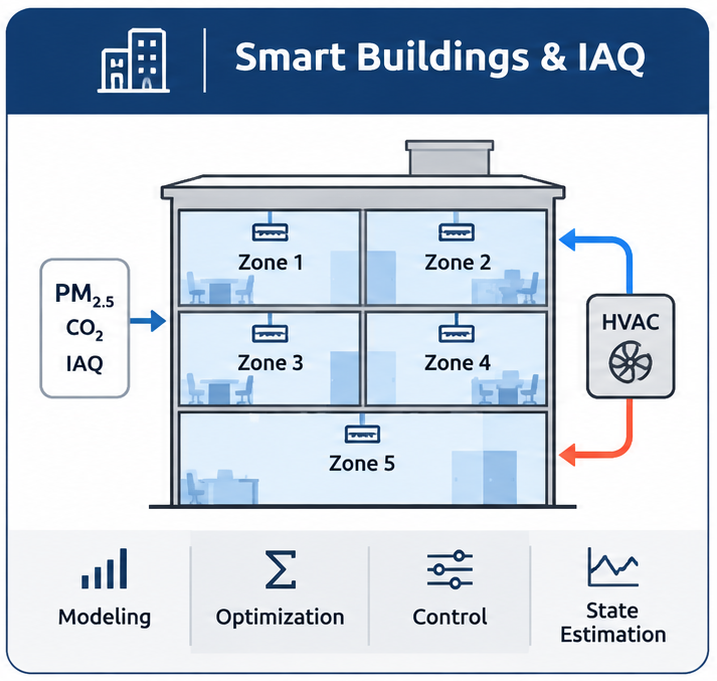
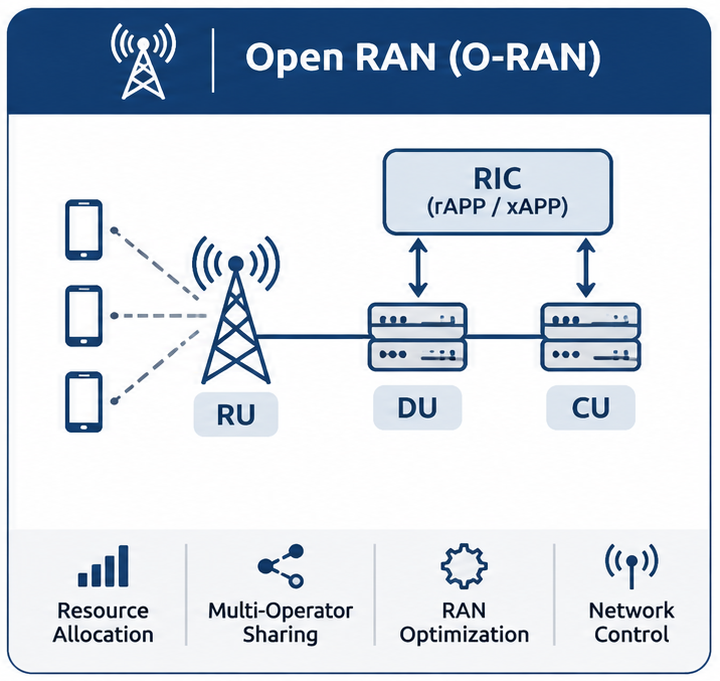
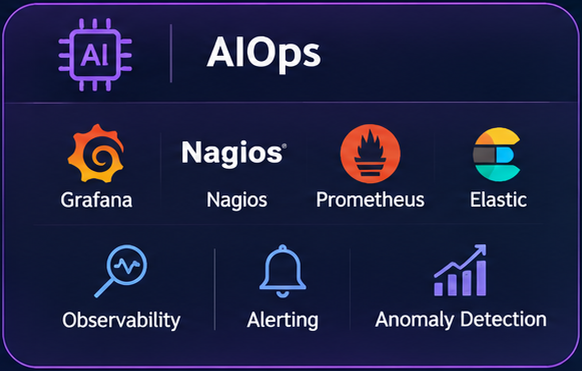
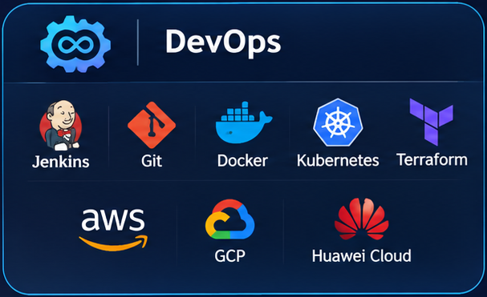
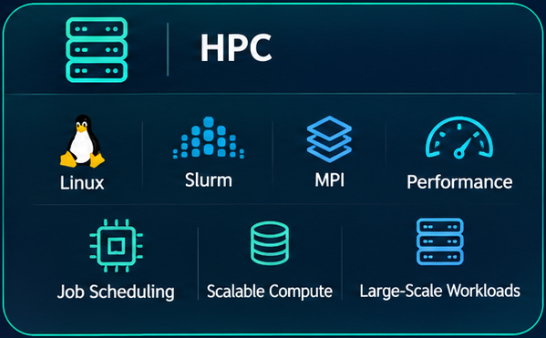

I am a PhD researcher in Electrical, Computer & Systems Engineering at Rensselaer Polytechnic Institute. I combine machine learning, optimization, and control with experience in cloud and platform engineering.
Modeling and decision-making for energy, air quality, networks, and multimodal AI.

Thermal modeling · PM2.5 control · Energy-efficient ventilation

Spectrum sharing · Resource allocation · Network control
Reliable platforms, from cloud deployments and operational monitoring to large-scale computing.

Observability · Alerting · Anomaly detection

CI/CD · Kubernetes · Infrastructure as code

Workload scheduling · Linux · System reliability